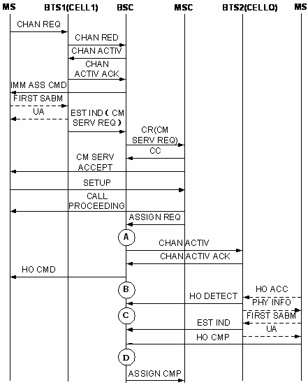

Measurement Counter
CH311:CELL_INTRABSC_OUTCELL_HO_CMD
Description
In the outgoing internal inter-cell handover procedure, after the channel in the target cell is assigned and activated, the BSC sends the HO CMD to the MS through the originating cell to notify the MS to access the target channel.
This measurement provides the number of outgoing internal inter-cell handover commands initiated by the BSC. The measurement is performed based on the originating cell and involves handovers on the SDCCH, TCHF, and TCHH and handovers between frequency bands as listed in Table 1.
Frequency Band of the Originating Cell |
Frequency Band of the Target Cell |
Counter |
|---|---|---|
GSM900, GSM900&DCS1800, GSM850, GSM850&DCS1800, GSM850&PCS1900 |
GSM900, GSM900&DCS1800, GSM850, GSM850&DCS1800, GSM850&PCS1900 |
900_900 |
GSM900, GSM900&DCS1800, GSM850, GSM850&DCS1800, GSM850&PCS1900 |
DCS1800, PCS1900 |
900_1800 |
DCS1800, PCS1900 |
GSM900, GSM900&DCS1800, GSM850, GSM850&DCS1800, GSM850&PCS1900 |
1800_900 |
DCS1800, PCS1900 |
DCS1800, PCS1900 |
1800_1800 |
Unit
Integer number or integer.
Measurement Point
Outgoing internal inter-cell handover commands (excluding directed retry)
In the outgoing internal inter-cell handover procedure (excluding directed retry), the BSC measures the related counter when sending an HO CMD message to the MS through the originating cell. The measurement point is B in Figure 1. The measurement object is the originating cell.

A |
Measurement point of Outgoing Internal Inter-Cell Handover Requests (Excluding Directed Retry) |
B |
Measurement point of Outgoing Internal Inter-Cell Handover Commands (Excluding Directed Retry) |
C |
Measurement point of Outgoing Internal Inter-Cell Handover Detection Messages Received by BSC (Excluding Directed Retry) |
D |
Measurement point of Successful Outgoing Internal Inter-Cell Handovers (Excluding Directed Retry) |
In the outgoing internal inter-cell handover procedure (directed retry), the BSC measures the related counter when sending an HO CMD message to the MS through the originating cell. The measurement point is B in Figure 2. The measurement object is the originating cell.

A |
Measurement point of Outgoing Internal Inter-Cell Handover Requests (Directed Retry) |
B |
Measurement point of Outgoing Internal Inter-cell Handover Commands (Directed Retry) |
C |
Measurement point of Outgoing Internal Inter-Cell Handover Detection Messages Received by BSC (Directed Retry) |
D |
Measurement point of Successful Outgoing Internal Inter-Cell Handovers (Directed Retry) |
Formula
Outgoing Internal Inter-Cell Handover Commands =
[Outgoing Internal Inter-Cell Handover Command (SDCCH) (Excluding Directed Retry) (900/850-900/850)] +
[Outgoing Internal Inter-Cell Handover Commands (TCHF) (Excluding Directed Retry) (900/850-900/850)] +
[Outgoing Internal Inter-Cell Handover Commands (TCHF) (Excluding Directed Retry) (900/850-1800/1900)] +
[Outgoing Internal Inter-Cell Handover Commands (TCHF) (Excluding Directed Retry) (1800/1900-900/850)] +
[Outgoing Internal Inter-Cell Handover Commands (TCHH) (Excluding Directed Retry) (900/850-900/850)] +
[Outgoing Internal Inter-Cell Handover Commands (TCHH) (Excluding Directed Retry) (900/850-1800/1900)] +
[Outgoing Internal Inter-Cell Handover Commands (TCHH) (Excluding Directed Retry) (1800/1900-900/850)] +
[Outgoing Internal Inter-Cell Handover Commands (Directed Retry) (900/850-900/850)] +
[Outgoing Internal Inter-Cell Handover Commands (Directed Retry) (1800/1900-1800/1900)] +
[Outgoing Internal Inter-Cell Handover Commands (Directed Retry) (900/850-1800/1900)] +
[Outgoing Internal Inter-Cell Handover Commands (Directed Retry) (1800/1900-900/850)]